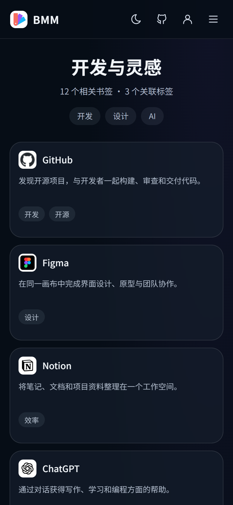
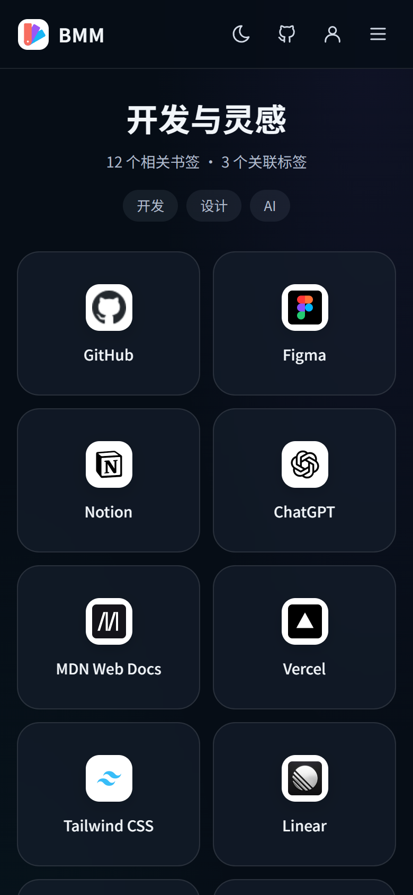
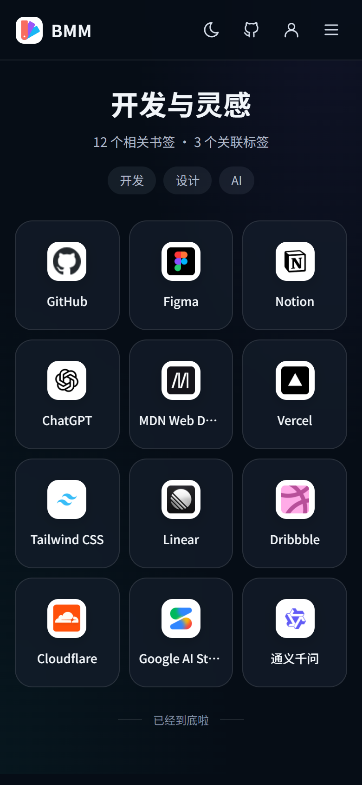
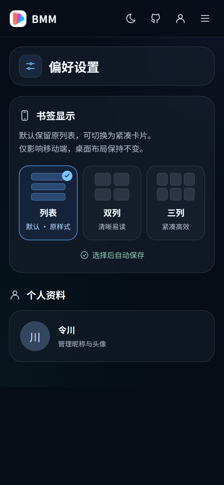

BMM · 移动端书签浏览体验
一屏找到，一点即达
默认原列表 · 紧凑布局可选 · 390 × 844
列表 · 默认
保持原样式

双列 · 可选
更清晰

三列 · 紧凑模式
更高密度

偏好设置
即时生效

原列表保持不变继续展示标题、描述与标签；未设置偏好时不改变现有浏览体验。
标题最多两行适合中英文混排与较长站点名称，减少识别时的猜测。
短标题单行省略以熟悉图标加快扫视；完整名称保留在辅助说明中。
选择后自动保存只调整移动端卡片密度，不影响桌面、标签与筛选。